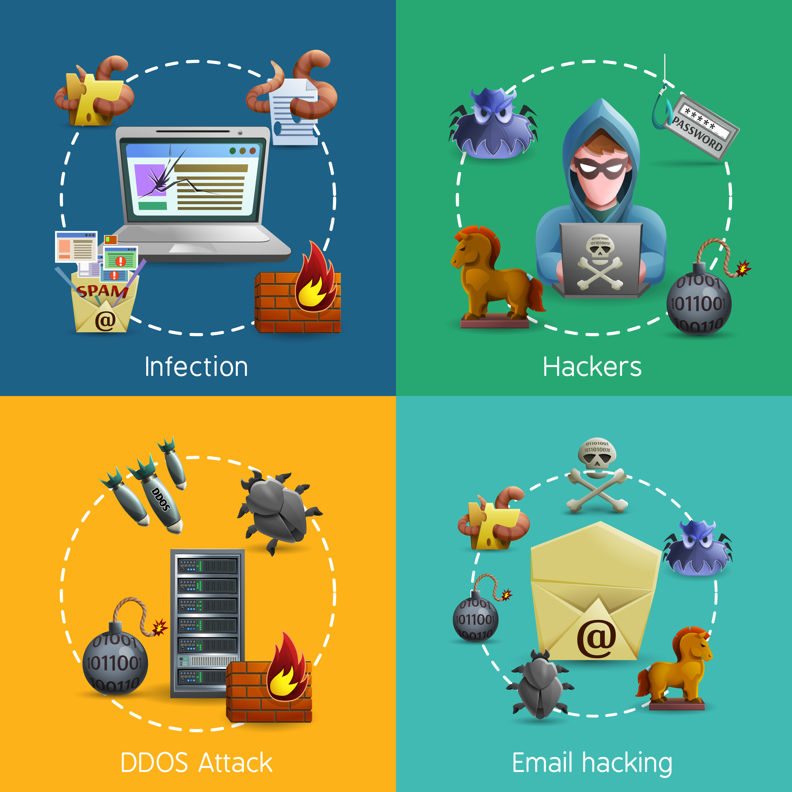
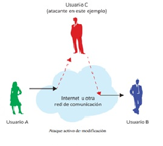
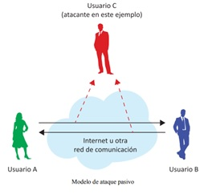

TIPOS DE AMENAZAS

fotos-vectores-gratis/negocios">
Las redes de ordenadores pueden ser vulnerables a muchas amenazas utilizando distintas formas de ataque, entre ellas:
• Ingeniería social: Alguien trata de acceder usando medios sociales (haciéndose pasar por un usuario legítimo o el administrador del sistema, engañando a la gente para que le revelen secretos o claves, etc.). Esta vía de ataque suele dar muchos resultados a los atacantes.
• Ataques de denegación de servicio: Incluyendo todos los tipos de ataques destinados a saturar a un ordenador o a una red, de tal manera que los usuarios legítimos no puede utilizarla.
• Ataques a: Determinados protocolos, aprovechando debilidades conocidas.
• Ataques a servidores: Aprovechan las vulnerabilidades de ciertos sistemas operativos de los ordenadores o vulnerabilidades en la configuración y administración del sistema.
• Adivinar contraseñas: Las contraseñas son secuencias de símbolos, generalmente asociadas a un nombre de usuario, que proporcionan un mecanismo para la identificación y la autenticación de un usuario en particular. En casi todos los servicios son los propios usuarios quienes eligen sus contraseñas, y con frecuencia eligen secuencias que no pueden ser consideradas seguras (por ejemplo, nombre de la pareja , nombre de hijo/hija, fechas de nacimiento, …) Como regla general, las contraseñas que son fáciles de recordar son también fáciles de adivinar.
• Espionaje de todo tipo: Incluyen la captura de mensajes de correo electrónico, archivos, contraseñas y otra información a través de una conexión de red que permite capturar todos los mensajes de un usuario.
Para poder proteger nuestra información en la red de amenazas debemos tener en cuenta los siguientes tipos de amenazas.
Existen dos formas en las cuales se puedan recibir los tipos de ataques:
Activos: Cuando un intruso intercepta datos que viajan a través de la red

imagen tomada de Manual de seguridad en Redes.
• Escucha telefónica
• Escáner de puertos
• Escaneo libre
Pasivos: cuando un intruso inicia comandos para interrumpir el funcionamiento normal de la red o para realizar un "espionaje" para encontrar y obtener acceso a activos disponibles a través de la red.

imagen tomada de Manual de seguridad en Redes.
• Ataque de denegación de servicio
• DNS spoofing
• Ataque por salteo de VLAN
• Ataque smurf
• Desbordamiento de búfer
• Desbordamiento de montículo
• Ataque de formato String
• Inyección SQL
• Ataque informático
Bibliografia:
• Soriano, M. Seguridad en redes y seguridad de la información. Improvet. Recuperado de: http://improvet.cvut.cz/project/download/C2ES/Seguridad_de_Red_e_Informacion.pdf
• Manual de seguridad en Redes. ArCERT. Coordinación de emergencia en Redes Teleinformaticas. Recuperado de: http://www.psicosocial.net/grupo-accion-comunitaria/centro-de-documentacion-gac/areas-y-poblaciones-especificas-de-trabajo/desgaste-y-seguridad-para-activistas/540-manual-de-seguridad-en-redes-informaticas/file